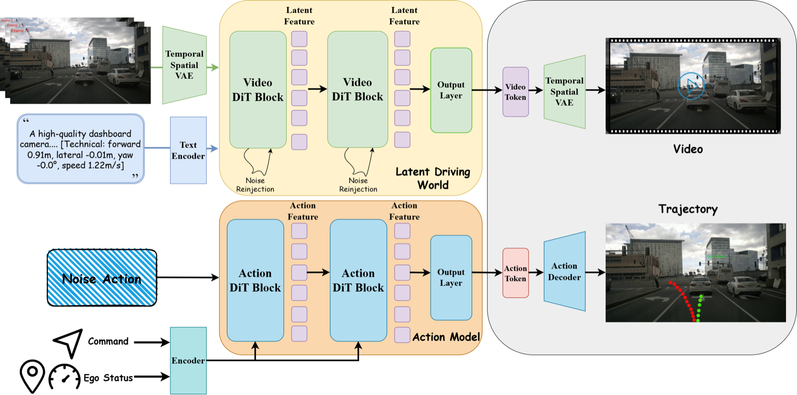

Our CVPR 2026 paper DriveLaW: Unifying Planning and Video Generation in a Latent Driving World studies a simple question: if a driving world model learns how scenes evolve, can its internal representation become the state used for planning?
Many driving world models still keep prediction and planning apart. A video model may synthesize future scenes, or provide auxiliary supervision, while the planner receives a separate representation for action. DriveLaW instead chains the two. DriveLaW-Video learns a latent driving world from large-scale driving videos, and DriveLaW-Act uses those video latents directly to generate future trajectories.
How It Works
DriveLaW-Video uses a spatiotemporal VAE and a Video DiT to model future driving videos in compressed latent space. A targeted noise reinjection step helps preserve structure during fast motion, where vehicles, road markings, and distant objects often become blurred or distorted.
DriveLaW-Act is a lightweight diffusion planner. It takes ego state, high-level commands, and cached latent features from the video model, then predicts a smooth trajectory. The training process is progressive: first learn long-horizon motion, then refine high-resolution scene detail, then fine-tune planning on top of the learned video latents.
What We Found
On nuScenes video generation, DriveLaW reaches 4.6 FID and 81.3 FVD, improving over prior single-view driving video generators. On NAVSIM Navtest, it reaches 89.1 PDMS without reinforcement-learning post-training or learned scorer post-processing. The representation ablation is especially useful: under the same diffusion planner, video-generator latents improve PDMS by 5.0 over BEV features and by 2.6 over VLM hidden states.
The result supports a practical direction for physical AI. Future prediction should not sit beside action as a separate artifact. A world model becomes more useful when the representation it learns for forecasting also carries the structure needed for control.